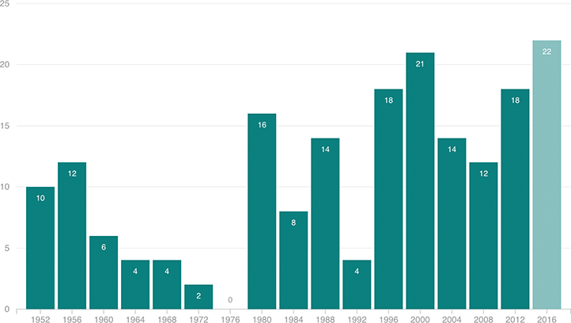

The 2016 Election Could Boast A Historic Gender Gap
This year’s presidential election has the potential to have the largest partisan gender voting gap in modern elections. This chart shows how big that gender gap has been in past elections. It shows women’s partisan gap minus mens — so in 2012, when women preferred Obama by 11 points and men preferred Romney by 7 points, that’s a 18-point gap. The latest NBC/WSJ poll shows a 22-point gap between women and men on Clinton and Trump.
